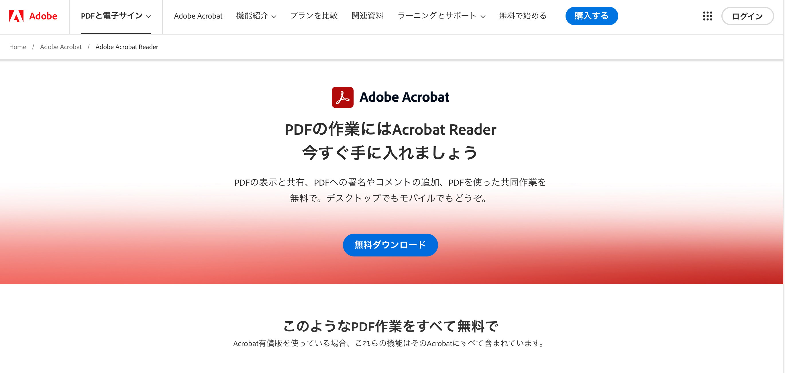
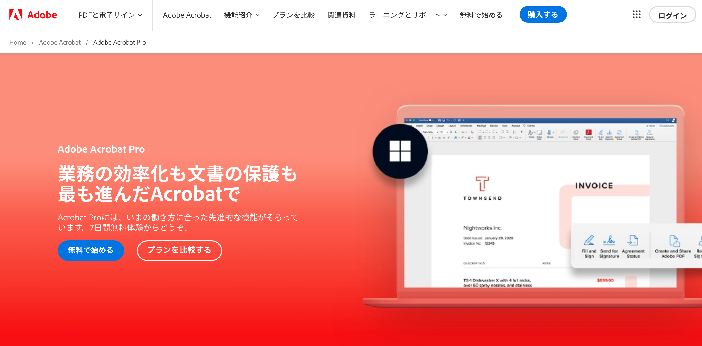
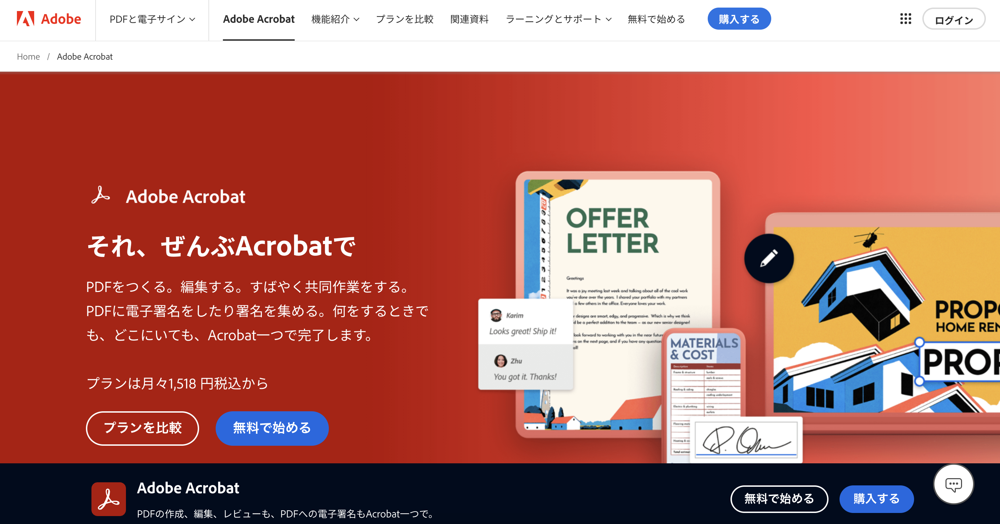
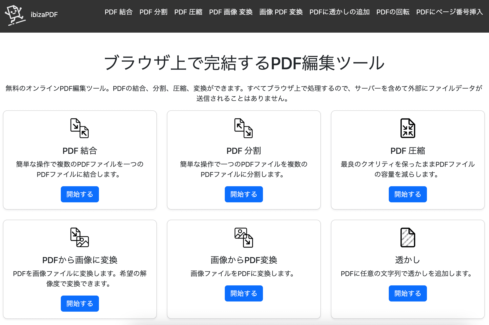

【Adobe】【PDF】本当に無料!?どこまで無料!?どう違う!?AdobeのPDF編集、閲覧ソフトを徹底解説!!
はじめに
「PDFを編集したいけど、どのAdobeのソフトを使えばいいか分からない」
「AdobeのPDF編集ソフトの違いが分からない」
「無料でPDFを編集したい」
PDFは、電子文書の標準フォーマットとして広く普及しています。Adobeは、PDFの開発元として、PDFを編集・閲覧するための様々なソフトやサービスを提供しています。
しかし、Adobe Acrobat Reader、Acrobat Pro、Acrobat onlineなど、多くの選択肢があり、どう違うのか迷ってしまう方もいるのではないでしょうか？
この記事では、AdobeのPDF編集・閲覧ソフトを徹底解説！それぞれの機能、価格、無料版との違いをわかりやすく説明し、あなたにぴったりのソフトを見つけるお手伝いをします。
目次 ▼
AdobeのPDF編集・閲覧ソフト一覧
Adobeが提供するPDF編集・閲覧ソフトは以下の通りです。
- Adobe Acrobat Reader：PDFの閲覧、印刷、注釈付けなどが行える無料ソフト
- Adobe Acrobat Pro：PDFの作成、高度な編集、変換などが行える有料ソフト
- Adobe Acrobat online：PDFの簡単な編集、変換などが行える無料のオンラインサービス
Reader、Proはその名の通りの機能や価格、onlineは手軽に簡単な編集ができるといったところですね。
Adobe Acrobat Reader

Adobe Acrobat Readerは、PDFの閲覧、印刷、注釈付けなどが行える無料ソフトです。「Reader」という名の通り、基本的に編集というよりは閲覧をするためのソフトと言えそうです。
Windows、Mac、iOS、Androidなど、様々なプラットフォームでアプリケーションをインストールする形で利用できます。
PDFの閲覧だけでなく、フォームへの入力、デジタル署名、注釈の追加など、基本的な機能を無料で利用できます。
Adobe Acrobat Readerでできること
- PDFの閲覧
- 印刷
- フォームへの入力
- デジタル署名
- 注釈の追加
- テキストのコピー
- 画像の保存
Adobe Acrobat Readerの価格
無料
Adobe Acrobat Pro

Adobe Acrobat Proは、PDFの作成、編集、変換などが行える有料ソフトです。「Pro」という名の通りAcrobat Readerの機能に加えて、PDFの編集、
ページの並べ替え、OCR、セキュリティ設定など、高度な機能を利用できます。
WindowsやMacではアプリケーションとして、スマートフォンやタブレットではブラウザ上で利用することができます。
ビジネスシーンでPDFを頻繁に扱う方におすすめです。
Adobe Acrobat Proでできること
- Acrobat Readerの全機能
- PDFの作成
- PDFの編集
- ページの並べ替え
- OCR
- セキュリティ設定
- PDFの圧縮
- PDFの結合
- PDFの分割
- PDFの変換
Adobe Acrobat Proの価格
Adobe Acrobat Proは、サブスクリプション形式で購入できます。以下の2つのプランがあります。
- Acrobat Pro（年間契約）：月額1,980円（税込）
- Acrobat Pro（月々払い）：月額3,380円（税込）
Adobe Acrobat Standard
また、より手軽なStandardプランもあり、こちらは高度な機能にはアクセスできないものの、より手軽な基本的な編集は可能なプランです。
- Acrobat Pro（年間契約）：月額1,518円（税込）
- Acrobat Pro（月々払い）：月額2,728円（税込）
Adobe Acrobat online

Adobe Acrobat onlineは、PDFの簡単な編集、変換などが行える無料のオンラインサービスです。アカウントを作成せずに利用できます。
PDFの結合、圧縮、変換など、基本的な機能を一部無料で利用できます。ただし、機能はAcrobat Proよりも限定されています。
Adobe Acrobat onlineでできること
- PDFの結合
- PDFの圧縮
- PDFの変換（Word、Excel、PowerPoint）
- PDFの回転
- PDFのページ削除
- PDFのパスワード設定
Adobe Acrobat onlineの価格
一部無料
※ログインせずに使用する場合、各機能には1回のみアクセスできます。また、一部機能は有料プランの契約が必要です。
ibizaPDF
 ibizaPDFより手軽に安全に無料の方法でPDF編集を行いたい場合は、ibizaPDFの利用がおすすめです。ibizaPDFはサーバーにデータを送信せず、安全に編集ができるのが特徴のWebサービスです。
ibizaPDFでできること
- PDFの結合
- PDFと画像の変換
- PDFの圧縮
- PDFへのページ番号追加
- PDFの回転
- PDFからページの抽出
- PDFへ透かしを追加
ibizaPDFはブラウザ上で動作するPDF編集サービスです。サイトにアクセスすればすぐに使える手軽さもありながら、サーバーにデータを送信することのないというセキュリティの 高さから人気の高いサービスです。
まとめ
この記事では、AdobeのPDF編集・閲覧ソフトについて解説しました。それぞれのソフトの特徴を理解し、自分にぴったりのソフトを選んでください。
PDFを閲覧するだけであれば、無料のAcrobat Readerで十分です。PDFの編集や変換など、高度な機能を利用したい場合は、Acrobat Proがおすすめです。
Acrobat onlineは、簡単な編集や変換を無料で行いたい場合に便利です。
また、もしもっと手軽に無料でPDFの編集がしたい場合はibizaPDFも利用してみてください。